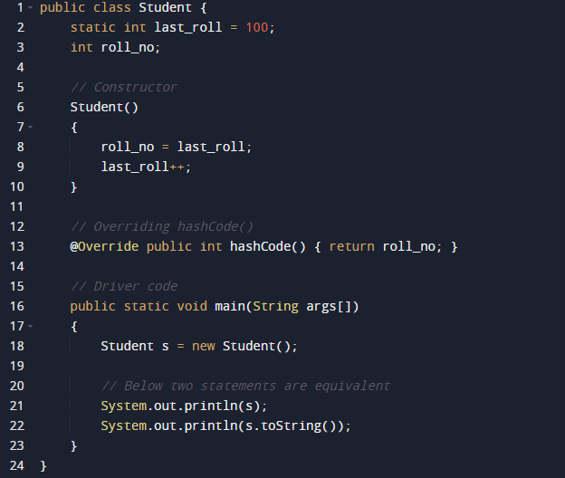
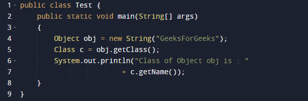
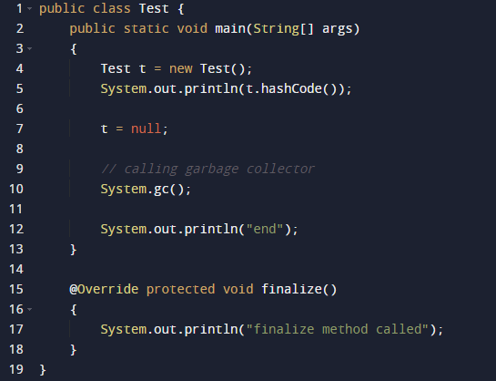

Object class is present in java.lang package. Every class in Java is directly or indirectly derived from the Object class. If a class does not extend any other class then it is a direct child class of Object and if extends another class then it is indirectly derived. Therefore the Object class methods are available to all Java classes. Hence Object class acts as a root of the inheritance hierarchy in any Java Program.

Using Object Class Methods
The Object class provides multiple methods which are as follows:
• tostring() method
• hashCode() method
• equals(Object obj) method
• finalize() method
• getClass() method
• clone() method
• wait(), notify() notifyAll() methods
1. toString() method
The toString() provides a String representation of an object and is used to convert an object to a String. The default toString() method for class Object returns a string consisting of the name of the class of which the object is an instance, the at-sign character `@’, and the unsigned hexadecimal representation of the hash code of the object. In other words, it is defined as:
// Default behavior of toString() is to print class name, then
// @, then unsigned hexadecimal representation of the hash code
// of the object
public String toString()
{
return getClass().getName() + "@" + Integer.toHexString(hashCode());
}
2. hashCode() method
For every object, JVM generates a unique number which is a hashcode. It returns distinct integers for distinct objects. A common misconception about this method is that the hashCode() method returns the address of the object, which is not correct. It converts the internal address of the object to an integer by using an algorithm. The hashCode() method is native because in Java it is impossible to find the address of an object, so it uses native languages like C/C++ to find the address of the object.
Use of hashCode() method
It returns a hash value that is used to search objects in a collection. JVM(Java Virtual Machine) uses the hashcode method while saving objects into hashing-related data structures like HashSet, HashMap, Hashtable, etc. The main advantage of saving objects based on hash code is that searching becomes easy.

Output
Student@64
Student@64
3. equals(Object obj) method
It compares the given object to “this” object (the object on which the method is called). It gives a generic way to compare objects for equality. It is recommended to override the equals(Object obj) method to get our own equality condition on Objects. For more on the override of equals(Object obj) method refer – Overriding equals method in Java
4. getClass() method
It returns the class object of “this” object and is used to get the actual runtime class of the object. It can also be used to get metadata of this class. The returned Class object is the object that is locked by static synchronized methods of the represented class. As it is final so we don’t override it.

Output
Class of Object obj is : java.lang.String
5. finalize() method
This method is called just before an object is garbage collected. It is called the Garbage Collector on an object when the garbage collector determines that there are no more references to the object. We should override finalize() method to dispose of system resources, perform clean-up activities and minimize memory leaks. For example, before destroying the Servlet objects web container, always called finalize method to perform clean-up activities of the session.
